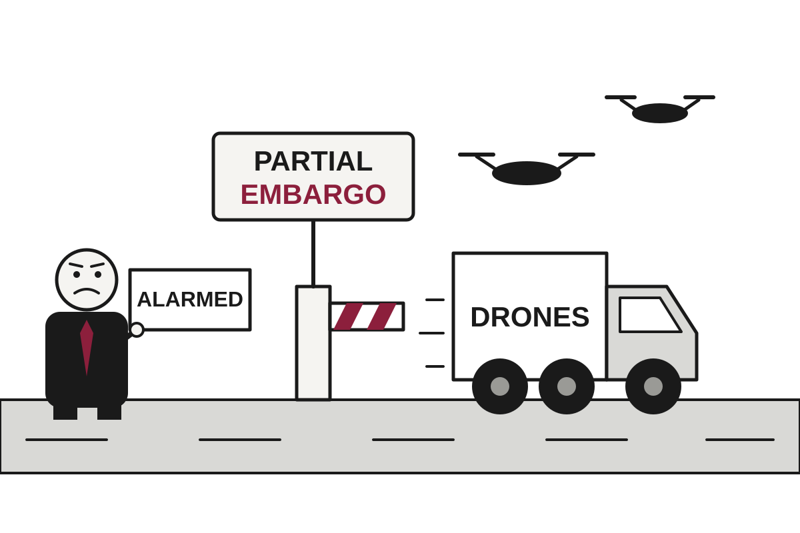

5 Things in 60 Seconds
- Drone strikes in Sudan's West Kordofan and Abyei reportedly killed more than 300 people over two days, including mourners at a funeral, and both sides insist they only target combatants, which leaves the dead unexplained.
- Albertans voted about 76% to 24% against starting a process toward separation from Canada in unofficial results, settling the question and handing separatists a new project: blaming the premier.
- Zelensky said US intelligence sharing on Russian missile attacks 'works now' after Oslo talks with Witkoff, while Rubio blamed a 'software problem' for the alleged gap, as software problems do.
- Nigeria confirmed its first case in the current Ebola outbreak in Abuja, with 44 contacts being traced, while Uganda and Nigeria argue over how much 'from Uganda' really means.
- Tesla and SpaceX have formed special committees to study a merger, and Musk, who runs both and says it would be a good idea, is barred from the room.

Drones Kill Hundreds in Sudan as Both Sides Say Civilians Were Not the Target
Strikes on a funeral convoy, a market and a fuel site killed more than 300 people, according to the BBC, and have pulled South Sudan closer to the war.
The wire said: Sudan army drones hit mourners and fuel market killing more than 300 people, sources say · BBC World
Drone strikes in Sudan have reportedly killed more than 300 people over two days, the BBC reported, including dozens who were travelling to a funeral. The Sudan War Observatory, a monitoring group, put the toll at 150 for two locations in West Kordofan state on Sunday evening. The region's information minister said 153 more died on Monday in Abyei. Each side in the war says it targets only combatants, which leaves civilians as the one group no one admits to aiming at.
The accounts of the Sunday strikes differ in detail, as accounts of such events tend to. The Sudan War Observatory said a truck carrying around 200 mourners was hit as it arrived in Al-Dabab, killing 145, and that a funeral tent was also struck, killing five more. The Guardian, citing a witness and an anonymous medic, reported 80 dead at a transport hub in al-Dibab, where people gather to travel home after market day. The witness said the drone struck twice, ten minutes apart. Spelling of the town and the death toll both remain unsettled, which is common in places where communications are cut and the dead are being buried first and counted second.
Geopolitics
Alberta Votes 3 to 1 to Remain in Canada, Separatists Pivot to Plan B: Blaming Premier
With about 76% backing unity in unofficial results, the referendum settled the province's question and opened a more interesting one inside the governing party.
Albertans voted overwhelmingly to remain in Canada. With nearly 1.9 million votes counted, about 76% backed staying and 24% backed beginning a process toward separation, according to unofficial Elections Alberta results reported by The Guardian. Translation: a referendum meant to measure how much Albertans wanted out measured it at roughly one in four.
Technically, the question was not whether to leave. It asked whether to begin a legal process that could lead to a second vote. Separatists were frustrated by that distinction, The Guardian noted, though it proved a fine way to lose twice in one sentence.
Zelensky Says US Intelligence Sharing 'Works Now,' a Sentence Allies Rarely Need to Say
After talks in Oslo, Kyiv says early-warning data is flowing again, while Patriots, Starlink and Washington's Russia policy remain unresolved ahead of Witkoff's trip to St Petersburg.
Nigeria Confirms Ebola Case as Uganda and Nigeria Debate Where the Virus Was Technically Acquired

A woman who flew in from Uganda tested positive in Abuja, and officials in two countries are already disputing what 'from Uganda' means.
Britain Hosts Omani Sultan to Praise Peacemaking While Sending Typhoon Jets to Saudi Arabia

On the same Tuesday, London toasted Oman's diplomacy over Hormuz and announced fighter jets for Saudi air defense, as Washington and Tehran each said the other must move first.
Elsewhere on the wire
UN experts call on India to stop using ‘excessive force’ against protesters Al JazeeraCurrent U.S. support for Ukraine looks very different than it did NPR WorldFrance is divided over who to blame for and what to learn from weekend riots BBC WorldMusk confirms SpaceX and Tesla exploring merger Al JazeeraRFK Jr’s ‘deities of vaccine research’ raided by police in Guinea-Bissau The GuardianPortugal housing protests continue after police clear camps DWAI

Meta Pauses Muse Sharing After 'Private' Links Turn Out to Be Searchable
Security firm Claroc found 6,800 shared Muse conversations through public DNS records, including loan applications and a confidential executive-search call.
Meta has paused the share feature in Muse, its new AI agent, after researchers reported that conversations shared through the feature could be found by anyone willing to run a search. Meta told Ars Technica and The Verge it is reviewing the report and considering changes to how the links can be discovered. The company said that sharing creates a page accessible to those with the link, which is accurate in the way that a house is accessible to anyone with the address.
The researchers are from the security firm Claroc. According to Ars Technica, they enumerated 6,800 Muse share links and opened a few hundred. Translation: they made a list of thousands of pages that were supposed to be known only to the people who received them, and then started reading.
Anthropic Cannot Find Enough Cloud, Plans to Ask the Public for Money

A leaked S-1 shows $750 billion in possible cloud spending, an $80.7 billion half-year loss, and landlords who increasingly view their biggest tenant as a rival.
CoreWeave Bonds Enter Distressed Territory Just as Firm Mentions 'Unlimited' Insurer Money

The AI cloud company owes more than $35 billion, lost over a billion dollars in six months, and has publicly expressed interest in borrowing from a bigger pool.
Accused OpenAI Bugger Stays Jailed After Folder Named 'Saudi Gov Docs' Surfaces

A court granted prosecutors' request to keep a former OpenAI engineer in detention, citing one-way tickets, Saudi bank accounts, and a very candid iPhone folder.
Elsewhere on the wire
Anthropic pitches AI safety bill that may block a model if 50+ people could be killed TechCrunch AIJudge dismisses Sam Altman’s sister’s sexual abuse lawsuit The Verge AIIt’s a bird, it’s a plane … it’s a robo-puffin? MIT Technology ReviewElevenlabs releases two new speech-to-speech models designed for real-time AI conversations The DecoderMeta drops the word "train" from its commercial TOS after AI backlash Ars Technica AIHugging Face CEO warns that Netflix’s OpenAI hack documentary isn’t accurate TechCrunch AITechnology

Eight Internet Trust Certificates Found Too Weak to Trust, Internet Asks Who Was Checking
Browser makers have blocked eight eMudhra intermediate certificates whose keys were weak enough to let anyone forge credentials for any site, but the cleanup will take far longer than the announcement did.
According to Ars Technica, security teams worldwide went on high alert Tuesday after eight TLS certificates were found to have private keys weak enough to let anyone mint trusted credentials for any site on the Internet. By late morning, browser makers and some major apps and programming languages had blocked all eight. Ars reported no sign in certificate transparency logs that the compromised keys had been used maliciously, which is the good news, and which the article is careful to describe as not the same as the problem being over.
Some background. A TLS certificate is a digital document that tells your browser a website is who it claims to be. Certificate authorities issue them, and your device trusts a built-in list of those authorities. An intermediate certificate is a deputy: the authority hands it the power to sign certificates on its behalf. Translation: the padlock icon is only as trustworthy as the weakest deputy.
Google Cloud Power Event Reminds Britain Its Banks Live in One Building
A power problem at a London data centre zone knocked out Revolut, Lloyds, HSBC, Royal Mail and court video hearings for much of Tuesday.
Ransom Negotiators Accused of Negotiating With Both Sides, Reportedly Without Telling Either
Federal investigators suspect executives at two firms hired to talk victims out of paying hackers were unusually close to the hackers, according to KrebsOnSecurity.
US Bans DeepSeek From Civilian Agencies, Keeps It Open for Pentagon Browsing
Homeland Security ordered DeepSeek's AI removed from civilian government systems, though the notice reportedly did not say exactly what the security concern was.
Elsewhere on the wire
YouTube might be testing hiding the dislike button The VergeGood type against all odds Hacker NewsCops raid office of RFK Jr. allies planning “unethical” vaccine trial on babies Ars TechnicaJudge dismisses Sam Altman’s sister’s sexual abuse lawsuit The VergeThe tech helping crack decades-old cold cases BBC TechnologyThe Other Epidemic: Trying to get off benzodiazepines Hacker NewsMarkets & Economy
NextDC Shares Fall 40% After Discovering Data Centers Need Electricity and Neighbors
The Australian operator cut its fiscal 2027 earnings forecast by roughly a third after power upgrades at its Melbourne site stalled amid community opposition.
Shares of NextDC fell 39.5% on Wednesday after the company slashed its annual earnings forecast, according to CNBC. Investing.com reported intraday drops of 42% and 44%, the former taking the stock to a near nine-year low. The figures differ because the stock kept moving during the day, which is what stocks do when they are being informed of something.
The cause was electricity. NextDC cut its fiscal 2027 revenue guidance to between A$475 million and A$500 million, from A$615 million to A$640 million. Translation: guidance is the number a company tells investors to expect, and this one was revised down by about A$140 million at the midpoint.
The profit forecast fell harder. Underlying EBITDA, meaning earnings before interest, taxes, depreciation and amortization, or profit before the accountants start subtracting things, is now expected at A$245 million to A$265 million. The earlier range was A$385 million to A$410 million. That is a drop of roughly 35%, and the market responded by cutting the share price by a similar amount, which at least shows internal consistency.
Netflix Beats Earnings, Misses the Mood, and Watches Shares Fall 6%

The streamer topped profit estimates and matched revenue forecasts, but a trimmed ad outlook and worries about viewing time sent the stock lower after hours.
SpaceX Stock Surges on Earnings, Convincing Wall Street the AI Boom Needs Rockets After All

MarketWatch says demand for SpaceX's computing power is 'off the charts,' lifting the wider AI trade and U.S. stock futures.
Salesforce Pays $5.66 Billion to Own the Software That Sends Its Customers Emails

Braze shares jumped 51% on a $47.50-per-share cash offer, a day after closing at $30.04, in Salesforce's second big AI-flavored purchase in months.
| Series | Last | Chg | Period | Trend |
|---|---|---|---|---|
| SPY | $769.05 | +0.34% | +2.78% | |
| Nasdaq | 26,430.89 | +1.11% | +3.57% | |
| VIX | 18.44 | −1.55 | −0.21 | |
| Brent crude | $126.55 | +0.61% | +51.21% | |
| Dollar index | 121.40 | −0.14% | +0.91% | |
| 2Y Treasury | 4.77% | +0.03 | +0.61 | |
| 10Y Treasury | 5.15% | +0.06 | +0.58 | |
| Fed Funds | 3.88% | ±0.00 | +0.25 | |
| CPI inflation (YoY) | 3.74% | +0.34 | +1.30 | |
| Unemployment | 4.20% | +0.10 | +0.10 |
Elsewhere on the wire
Elice's huge stock swings show AI's spending boom is getting more investor scrutiny CNBC MarketsCar buyers are demanding lower prices and better tech. Automakers must deliver both CNBC EconomyBull markets tend to peak with a whimper, not a bang — but a 15% correction for the S&P 500 may be next MarketWatchSuper Micro’s stock soars after surprise update — with Dell and HPE shares joining the rally MarketWatchJapan exports post huge miss in September as growth slows to 16.7% CNBC MarketsWomen may be at greater risk of AI job losses. Telephone switch operators and PCs show why CNBC EconomyPhoto credits
- Nigeria Confirms Ebola Case as Uganda and Nigeria Debate Where the Virus Was Technically Acquired: Alexander Bay Airport Terminal by Emilemyburgh, CC BY-SA 4.0, via Wikimedia Commons
- Britain Hosts Omani Sultan to Praise Peacemaking While Sending Typhoon Jets to Saudi Arabia: Castillo de Windsor, Inglaterra, 2014-08-12, DD 12 by Diego Delso, CC BY-SA 4.0, via Wikimedia Commons
- Hacker Delegates 100 Break-Ins to AI Agents, Finally Achieving Work-Life Balance: NOIRLab HQ Server Racks (6V6A0375-CC) by NOIRLab/NSF/AURA/T. Slovinský, CC BY 4.0, via Wikimedia Commons
- Meta Pauses Muse Sharing After 'Private' Links Turn Out to Be Searchable: Free password lock laptop image, CC0, via Rawpixel
- Anthropic Cannot Find Enough Cloud, Plans to Ask the Public for Money: Data center infrastructure in the United States by DOE/National Renewable Energy Laboratory (NREL), Public domain, via Wikimedia Commons
- CoreWeave Bonds Enter Distressed Territory Just as Firm Mentions 'Unlimited' Insurer Money: Datacenter Server Racks (22370909788) by Carl Lender from Sunrise, USA, CC BY 2.0, via Wikimedia Commons
- Accused OpenAI Bugger Stays Jailed After Folder Named 'Saudi Gov Docs' Surfaces: Federal Courthouse Austin Texas South Elevation 2020 by Larry D. Moore, CC BY 4.0, via Wikimedia Commons
- Musk Says Musk's Two Companies Are Discussing Merging, Without Musk: Sound suppression water system test at KSC Launch Pad 39A by NASA, Public domain, via Wikimedia Commons
- Eight Internet Trust Certificates Found Too Weak to Trust, Internet Asks Who Was Checking: NOIRLab HQ Server Racks (6V6A0375-CC) by NOIRLab/NSF/AURA/T. Slovinský, CC BY 4.0, via Wikimedia Commons
- Google Cloud Power Event Reminds Britain Its Banks Live in One Building: Datacenter Server Racks (22370909788) by Carl Lender from Sunrise, USA, CC BY 2.0, via Wikimedia Commons
- NextDC Shares Fall 40% After Discovering Data Centers Need Electricity and Neighbors: Datacenter Server Racks (22370909788) by Carl Lender from Sunrise, USA, CC BY 2.0, via Wikimedia Commons
- Netflix Beats Earnings, Misses the Mood, and Watches Shares Fall 6%: TVRemote by Robert S. Donovan from Anderson, SC, USA, CC BY 2.0, via Wikimedia Commons
- SpaceX Stock Surges on Earnings, Convincing Wall Street the AI Boom Needs Rockets After All: SES-10 Launch - world's first reflight of an orbital class rocket (33361035200) by SpaceX, CC0, via Wikimedia Commons
- Salesforce Pays $5.66 Billion to Own the Software That Sends Its Customers Emails: San Francisco (CA, USA), Pioneer Park, Blick auf den Business District -- 2022 -- 0885 by Dietmar Rabich, CC BY-SA 4.0, via Wikimedia Commons